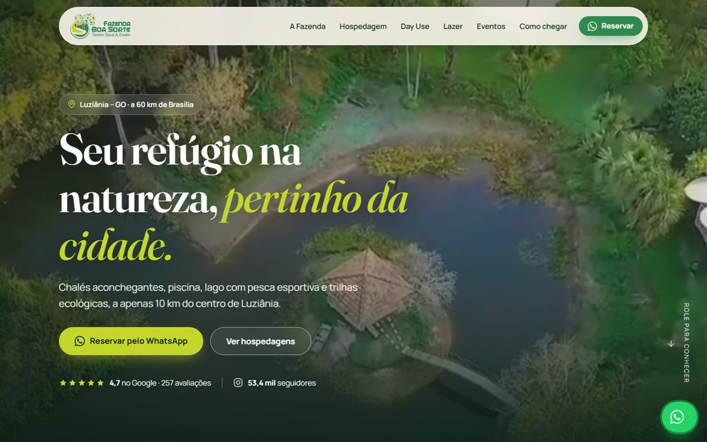
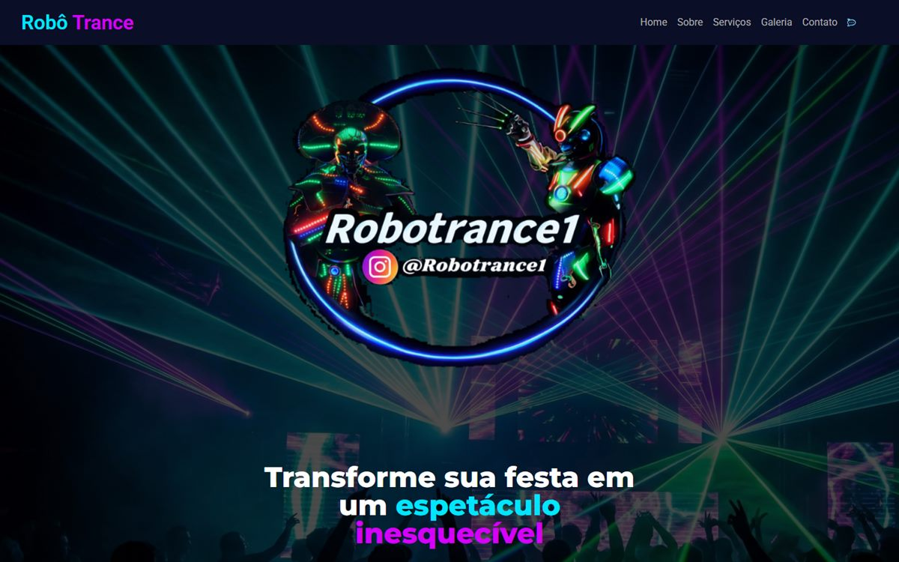
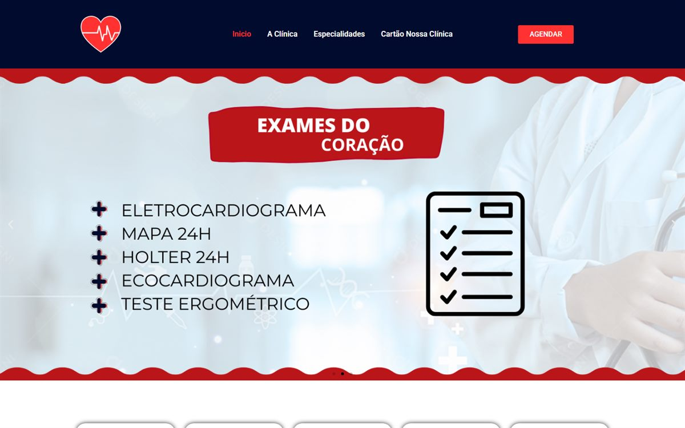
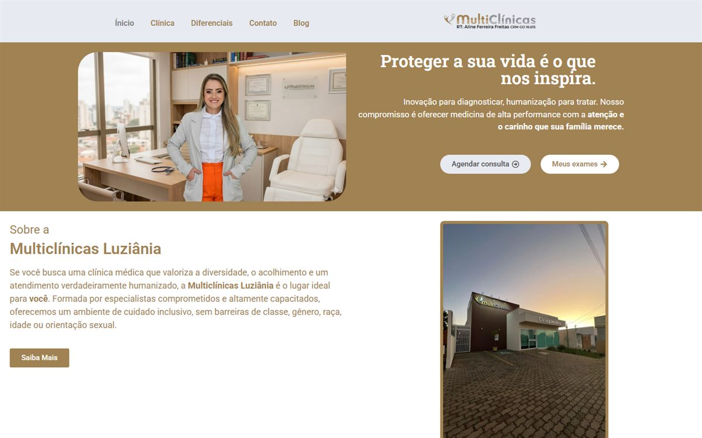

Disponível para novas oportunidades
Elder Luiz
Olá, mundo! Eu sou
Elder Luiz
Moreira
> Desenvolvedor Fullstack
Construo do banco de dados ao pixel. Backend robusto com Java & Spring Boot, microsserviços na AWS e interfaces que convertem com React e JavaScript. Sites que eu criei já estão no ar, trabalhando todos os dias para clientes reais.
0sites no ar para clientes reais
0repositórios no GitHub
0cursos e certificações técnicas
0anos atuando com tecnologia
01 · sobre mim
Backend no DNA,
Backend no DNA,
fullstack por escolha.
Sou estudante de Sistemas de Informação no Instituto Federal de Goiás e desenvolvedor desde que percebi que código é a forma mais rápida de transformar um problema em solução. Comecei pelo backend: passei pela Compass UOL construindo APIs REST e microsserviços com Java, Spring Boot, Spring Cloud, Docker e AWS.
Ao mesmo tempo, coloquei no ar sites para clínicas médicas, uma fazenda de turismo rural e uma empresa de entretenimento. Isso me ensinou o outro lado: entender o negócio do cliente, criar uma interface que gera contato e entregar algo que funciona no celular de qualquer pessoa.
Hoje meu objetivo é claro: ser um desenvolvedor fullstack que domina a ponta a ponta, do banco ao deploy. Sou autodidata, disciplinado e tenho a ânsia diária de aprender algo novo.
-
{ }
APIs e microsserviços
Java 17, Spring Boot, JPA, Spring Cloud, OpenFeign e mensageria.
-
</>
Interfaces que convertem
Sites rápidos e responsivos, pensados para gerar contato pelo WhatsApp.
-
☁
Cloud AWS
EC2, S3, CloudFront, ECS, Lambda, SQS/SNS e API Gateway.
-
↗
Visão de negócio
Experiência com marketing digital, tráfego pago e Google Meu Negócio.
02 · stack
Ferramentas que eu uso
Ferramentas que eu uso
para entregar.
02 Frontend
03 Dados
04 Cloud & DevOps
03 · experiência
Onde eu já
Onde eu já
gerei valor.
-
Desenvolvedor Web Freelancer
Dev Elder · projetos sob demanda
Desenvolvimento de sites institucionais e landing pages para negócios locais e nacionais, da conversa com o cliente ao deploy. Foco em performance, responsividade e conversão via WhatsApp. Clientes incluem Nossa Clínica, Multiclínicas Luziânia, Robô Trance e Fazenda Boa Sorte.
-
Desenvolvedor Java · Estágio
Compass UOL
Desenvolvimento backend com Java e Spring Boot em arquitetura de microsserviços, com mensageria via Spring Cloud e Docker. Computação em nuvem na AWS (EC2, S3, CloudFront, Snowball), bancos SQL e NoSQL, integração de APIs REST, versionamento com Git e rotina ágil com Scrum.
-
Desenvolvedor Web
TRP Cardiologia e Imagem
Desenvolvi do zero o site institucional da clínica com WordPress e PHP, responsivo e alinhado à identidade da marca. Também atuei como social media e gestor de marketing digital: campanhas, tráfego pago, Google Meu Negócio e peças gráficas.
-
Técnico em Informática
ZM Plastic Embalagens
Organização e atualização dos dados no ERP da empresa (clientes, fornecedores, produtos, ordens de compra e relatórios gerenciais), dando suporte aos setores administrativo e operacional.
-
Estágio · Técnico em Informática
Complexo de Especialidades Médicas Metropolitano
Suporte no treinamento do sistema interno, implantação e gerenciamento de redes e manutenção dos equipamentos, garantindo a operação do ambiente tecnológico.
04 · projetos
Coisas que eu
Coisas que eu
coloquei no ar.

● no ar
Site · Turismo rural
Fazenda Boa Sorte
Site completo para uma fazenda de turismo rural em Luziânia: hospedagem, day use, eventos, avaliações, FAQ e rotas. Carrossel de acomodações com swipe, vídeo, imagens WebP e reservas direto no WhatsApp.

● no ar
Site · Entretenimento
Robô Trance
Site para empresa de robôs de LED e efeitos especiais para eventos em todo o Brasil, com galeria, serviços e orçamento via WhatsApp.

● no ar
Site · Saúde
Nossa Clínica Luziânia
Centro médico e de diagnósticos: especialidades, cartão de desconto, tabela de serviços, mapa e formulários de agendamento online.

● no ar
Site · Saúde
Multiclínicas Luziânia
Clínica com mais de 10 especialidades: agendamento pelo WhatsApp, acesso a resultados de exames, convênios, avaliações do Google e blog.
○ arquivado
Site · Saúde
TRP Cardiologia e Imagem
Site institucional construído do zero com WordPress e PHP, somado a toda a estratégia digital da clínica: redes sociais, tráfego pago e peças gráficas.
// direto do meu GitHub
Microsserviços de Eventos e Ingressos
Desafio da Compass UOL: dois microsserviços (event-manager e ticket-manager) para shows, teatro e exposições, com integração de CEP via OpenFeign e documentação Swagger.
CompassDesafio3 ↗Cardápio Digital
Aplicação fullstack de cardápio: API REST em Spring Boot com DTOs de request/response e frontend em React consumindo os endpoints.
Cardapio ↗GamesForLife · DSList
API REST de listas de games com entidades, DTOs, projections e consultas customizadas. Perfis de teste com H2 e produção com PostgreSQL.
GamesForLife ↗Shopping Cart
Carrinho de compras em Java 17 com JDBC e MySQL seguindo padrão MVC: estoque, carrinho e cálculo de totais direto no banco.
ShoppingCart ↗Notes Project
Aplicação de notas construída com Laravel e Blade, explorando rotas, controllers, views e o ORM Eloquent no ecossistema PHP.
NotesProject ↗Chess System
Xadrez no terminal construído com orientação a objetos: tabuleiro, regras de movimento de cada peça, controle da partida e tratamento de exceções.
ChessSystem ↗Flappy Bird IFG
Releitura do Flappy Bird criada na disciplina de Desenvolvimento de Jogos do IFG, projeto que virou notícia no site do instituto.
FlappyBirdIFG ↗Jogo da Memória
Jogo da memória com interface gráfica em JavaFX, manipulação de eventos e lógica de estado da partida.
JogoDaMemoriaJavaFx ↗
05 · formação
Estudo todo dia.
Estudo todo dia.
Sem exceção.
Bacharelado em Sistemas de Informação
Instituto Federal de Goiás · Campus Luziânia
2021 – 2026
IdiomaInglês avançado
ModeloRemoto, híbrido ou presencial
- SantanderBackend com Java87h
- UdemyJava Completo · Programação Orientada a Objetos55h
- UdemyMicrosserviços e Mensageria com Spring Cloud e Docker17h
- UdemyAPI REST com Java e Spring Boot16h
- RocketseatProgramação Web: HTML, CSS, JavaScript e Git12h
- UdemySQL e MySQL · CRUD e Joins10h
- UdemyAmazon S3, CloudFront CDN e Snowball5h
- UdemyServidores Virtuais com EC2 na AWS5h
- DIOVersionamento de Código com Git e GitHub5h
- UdemyComputação em Nuvem Amazon AWS4h
06 · contato
Vamos construir
Vamos construir
algo juntos?
Tem uma vaga, um projeto ou uma ideia? Me chama. Respondo rápido e adoro uma boa conversa sobre código e produto.